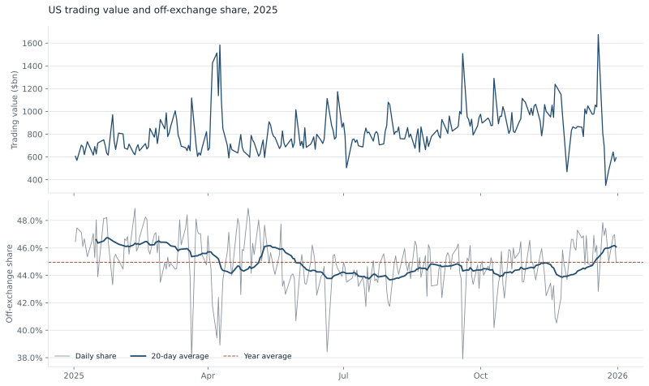
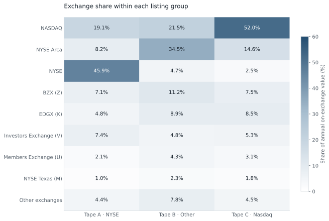
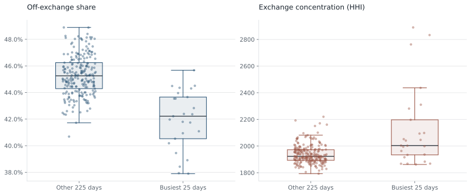
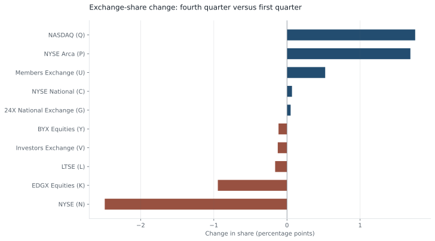

01 / Overview
Where trading activity took place
I examined where US share trading was reported during 2025 and whether the balance changed on the busiest days. On-exchange trades take place on an exchange. Off-exchange trades occur through other trading arrangements and are reported to a FINRA Trade Reporting Facility, or TRF.
The main measure is notional value: price multiplied by the number of shares traded. It describes the dollar value of activity, rather than the number of shares or trades.
A percentage point is the difference between two percentages. For example, a change from 45% to 42% is a fall of three percentage points, not a 3% relative fall.
Result. Off-exchange trading accounted for a substantial part of activity. On the busiest days, the balance shifted towards exchanges. A market-wide average therefore misses differences between periods and groups of securities.
02 / Data and terms
What the daily figures measure
Cboe’s daily file contains dollar value, shares and trade counts for each reporting market centre. The study covers 250 trading days in 2025. I check for duplicate venue/day records, unmapped venue names and disagreements between the tape totals and the reported overall total.
The listing tape groups securities by their listing exchange. It identifies the group being traded, not where every trade in that group occurred.
- Venue / market centre
- An exchange or reporting facility identified in the dataset. A reporting facility records trades; it is not necessarily the place where they executed.
- FINRA / TRF
- FINRA is the US securities-industry self-regulatory organisation. A Trade Reporting Facility receives reports of eligible off-exchange share trades.
- Tape A
- Securities listed on the New York Stock Exchange.
- Tape B
- Securities listed on other US exchanges outside the Tape A and Nasdaq groups. Many exchange-traded funds are in this group.
- Tape C
- Securities listed on Nasdaq.
- Market share
- A venue’s activity divided by the total activity in the chosen market and period. The denominator matters.
- Liquidity
- The ability to trade an asset at a reasonable cost and size. Trading volume is related to liquidity, but does not measure all of it.
03 / Method
How I compared the market
- Separate exchange activity from off-exchange reporting, then calculate each day’s shares using dollar value, share count and trade count.
- Compare exchanges separately within Tape A, B and C, so their different listing groups are visible.
- Identify the busiest 10% of days by total dollar value and compare their off-exchange share and exchange concentration with the remaining days.
- Compare each exchange’s average daily share in January–March with October–December, and review unusual changes against its previous 20 trading days.
04 / Results
Shares by measure and listing group
The activity measure changes the market-share figure
Off-exchange trading averaged 45.0% of daily dollar value, 50.7% of shares and 41.1% of trades. These are different views of the same market, not conflicting results. Share counts give more weight to low-priced shares; trade counts give every reported trade the same weight.

Exchange leadership depends on the listing group
NYSE leads on Tape A, NYSE Arca on Tape B and Nasdaq on Tape C. A venue’s importance therefore depends on which securities are being traded.

Implication. Compare venues against the securities and trading periods that matter for the question. A large overall market share does not establish the best execution for a particular order.
05 / Busy days
Activity shifted towards exchanges
The busiest 25 days are the top 10% by total dollar value. On these days, off-exchange share was 3.34 percentage points lower than on the other 225 days.

Exchange trading also became more concentrated. I measure this with the Herfindahl–Hirschman Index (HHI), the sum of squared percentage market shares. One exchange with all activity would score 10,000; a more even spread across exchanges scores lower. The busiest days scored about 188 points higher.
This is consistent with trading becoming more focused on exchanges, and on a smaller group of them, when total activity is high. Daily totals cannot establish whether auctions, news or other changes caused the pattern.
How stable was the difference under resampling?
I repeatedly sampled trading days from each group and recalculated the difference. This bootstrap resampling produces a range of plausible estimates conditional on the days in the sample.
The central 95% of resampled differences ran from -4.23 to -2.48 percentage points. All were below zero, so the direction was stable under this check. It does not prove a cause or establish that the same result will hold in another year. The resampling treats days as independent and does not fully account for runs of similar market conditions.
06 / Share changes
How exchange shares changed
Nasdaq and NYSE Arca gained the most average daily on-exchange share between the first and fourth quarters. NYSE and EDGX lost share. The chart reports changes in percentage points, rather than percentage growth.

These shifts help identify where to investigate changes in trading behaviour, venue services or the mix of securities. A gain in reported activity is not, by itself, an improvement in execution quality.
The code also compares the latest daily share with the preceding 20-day average and usual variation. This highlights an unusual move for review; it does not identify its cause.
07 / Limits
What trading totals cannot tell us
A TRF report does not distinguish a wholesaler, an alternative trading system or another broker arrangement. An alternative trading system is a regulated trading venue operating outside a national securities exchange.
The daily file does not contain order prices, quotes, execution delays, fill probabilities or transaction costs. It cannot show whether a client would have received a better outcome elsewhere. HHI describes concentration, not execution quality.
To connect these market-wide patterns to execution, I would need order and fill records linked to quotes, venue and trading time. That would allow a comparison of actual outcomes on busy and ordinary days.
08 / Code and sources
Review the analysis
Source: Cboe historical US equity market volume, based on consolidated US trade reports. Definitions and reporting context: FINRA, Where Do Stocks Trade? This study uses public market totals.